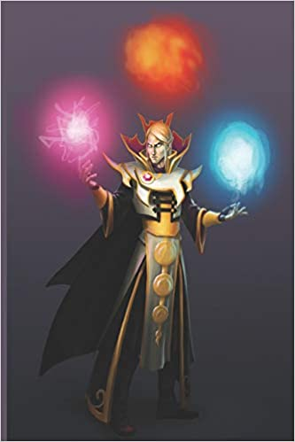

Se trata del más célebre de los héroes griegos, el paradigma de la
virilidad y el adalid del orden olímpico contra los monstruos
ctónicos. Su extraordinaria fuerza es el principal de sus atributos,
pero también lo son el coraje, el orgullo, cierto candor y un
formidable vigor sexual. Se le considera el ancestro de los Reyes de
Esparta y la influencia de esta polis en la Grecia Arcaica y Clásica
fue una de las razones de la difusión de su leyenda y su culto.